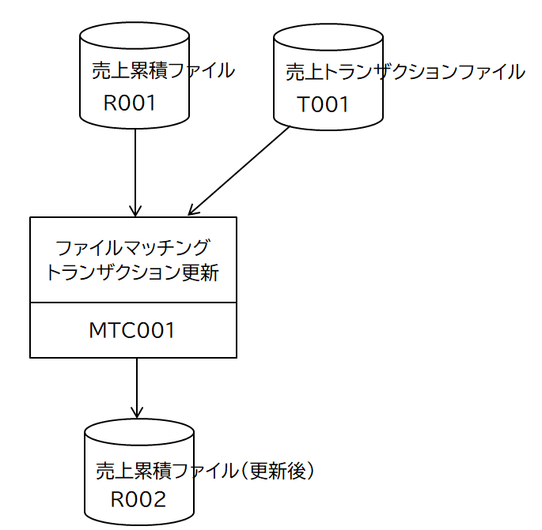
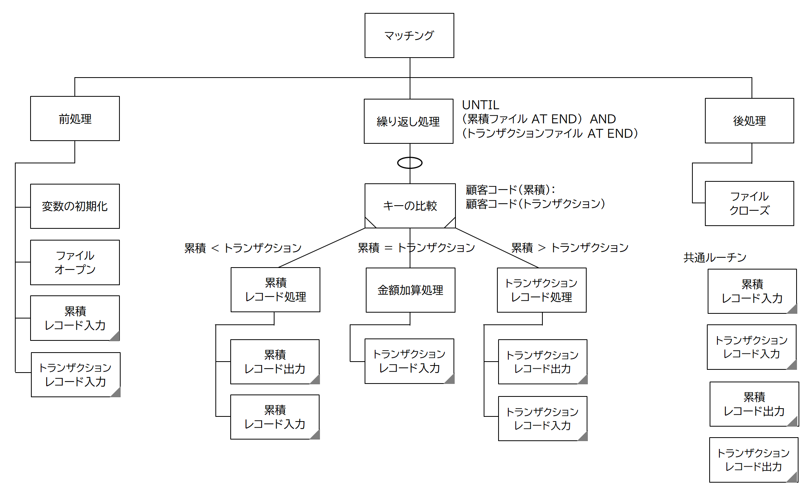
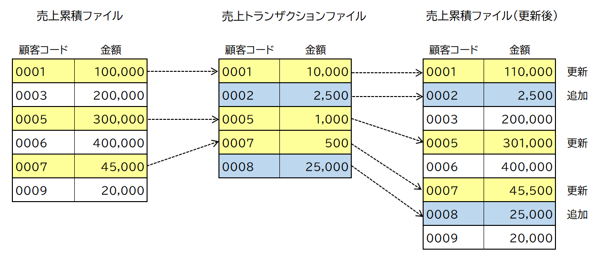

処理パターン(２) マッチング
マッチングは、複数ファイルのレコードを特定のキーで照合し、条件に従った操作を行う。
機能仕様
売り上げ累積ファイルと売り上げトランザクションファイルは、売り上げレコード（顧客コード、売り上げ金額）から構成される。
トランザクションファイルを読み込み、累積ファイルに同じ顧客コードのレコードがあれば売り上げ金額をそこに加算する。
累積ファイルに同じ顧客コードのレコードがなければ、新しい売り上げレコードとして追加する。新しい累積ファイルは、トランザクションレコードによる変更・追加を反映したものになる。
入出力構成図
プログラム構造図
ソースコード
処理前後のファイルの内容

この処理パターンは、マスターファイルの更新とみなすことができる。マスターのメンテナンスとしてコードの追加、削除、マスター項目の変更といった操作を行うとき、この処理パターンを利用する。なお、既存レコードに対する変更と削除の違いは、トランザクションレコードにフラグを持たせて切り分けるようにする。
順編成ファイルにおけるデータの削除とは、一度ファイルを読み込み、それを書き出すとき、特定のレコードを書き出さないことによって実現する。